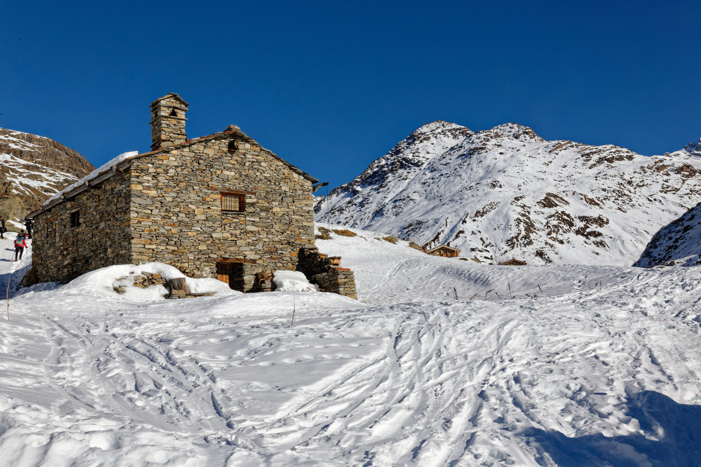

I nostri itinerari

| Itinerario | Difficoltà | Durata | Dislivello |
|---|---|---|---|
| Anello dei laghi di Fusine | Facile | 01:15 | 50 m |
| Anello Castel Rigone | Media | 4 h | 500 m |
| Vetta del Monte Cjampon | Difficile | 8 h | 1500 m |
Consigli
Scarponi adatti
Scegli calzature con suola scolpita e già rodate.
Acqua e cibo
Porta almeno un litro e mezzo d'acqua e qualcosa di energetico.